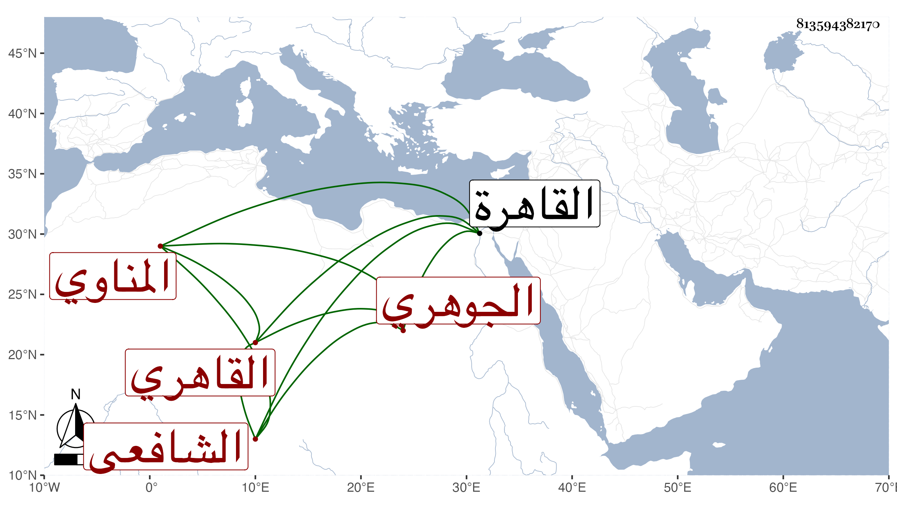

0902Sakhawi.DawLamic.ITO20230111-ara1.EIS1600.813594382170
Biography ID: 813594382170
122
محمد بن محمد بن أحمد بن معين بن إبراهيم الشمس المناوي ثم القاهري الجوهري والده الشافعي ويعرف بابن الريفي . ولد في العشر الاخير من رمضان سنة ثمان وستين وسبعمائة وسمع من جويرية وابن حاتم والتنوخي وابن الشيخة والمجد إسماعيل الحنفي والفرسيسي وغيرهم ، وحدث سمع منه الفضلاء ، ومما سمعه على الاولى مجلسا البختري والشافعي بل سمع من القاضي فتح الدين بن الشهيد نظم السيرة النبوية له ، وأم بالناصرية من بين القصرين . وقال شيخنا في إنبائه : وحصلت له ثروة من قبل بعض حواشي الناصر فرج من النساء وأكثر من القراءة علي البرهان والبيجوري حتى قرأ عليه في الروضة والشرح الكبير والصغير وغيرها وكذا لازم دروس الولي بن العراقي مع كثرة التلاوة والاحسان للطلبة . ومات في ليلة الخميس خامس من شوال سنة أربعين بالقاهرة وكانت جنازته مشهودة .
